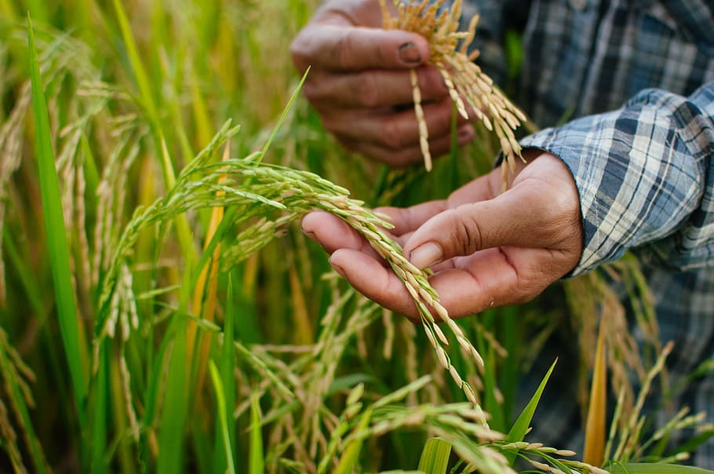
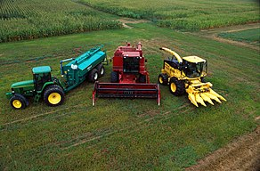

Agriculture
Agriculture is the art and science of cultivating the soil, growing crops, and raising livestock.
It includes the preparation of plant and animal products for people to use and their distribution to markets.
Agriculture provides most of the world’s food and fabrics. Cotton, wool, and leather are all agricultural products.
Agriculture also provides wood for construction and paper products.
Start of Agriculture:
Over centuries, the growth of agriculture supported the development of cities. Before agriculture became widespread,
hunting and gathering was how people fed themselves. Between 10,000 and 12,000 years ago, people gradually learned how
to grow cereal and root crops, and settled down to a life based on farming.
Eventually, much of Earth’s population became dependent on agriculture. Scholars are not sure why this shift to farming
took place, but it may have occurred because of climate change.
Improved Technology:
 Many effective agricultural techniques have roots in pre-agricultural human history. For millennia, people have used
controlled burning techniques to get rid of brush and debris, allowing edible plants to grow more abundantly and preventing
larger wildfires during dry seasons. Today, large wildfires in North America and Australia demonstrate the importance of
maintaining controlled burning practices perfected by many Native American tribes and Aboriginal Australian peoples.
Many effective agricultural techniques have roots in pre-agricultural human history. For millennia, people have used
controlled burning techniques to get rid of brush and debris, allowing edible plants to grow more abundantly and preventing
larger wildfires during dry seasons. Today, large wildfires in North America and Australia demonstrate the importance of
maintaining controlled burning practices perfected by many Native American tribes and Aboriginal Australian peoples.
Around 5500 B.C.E., farmers in Mesopotamia developed simple irrigation systems. By channeling water from streams onto
their fields, farmers were able to settle in areas once thought to be unsuited to agriculture. In Mesopotamia, Egypt, and China,
people organized themselves and worked together to build and maintain better irrigation systems.
Early farmers also developed improved varieties of plants. For example, around 6000 B.C.E., a new variety of wheat arose in South
Asia and Egypt. It was stronger than previous cereal grains, its hulls were easier to remove, and it could be made into bread.
Machinery

 A period of important agricultural development began in the early 1700s for Great Britain and the Low Countries (Belgium, Luxembourg,
and the Netherlands, which lie below sea level). New agricultural inventions dramatically increased food production in Europe and
European colonies, particularly in North America.
Many machines were developed in the United States. The cotton gin, invented by Eli Whitney in 1794, reduced the time needed to
separate cotton fiber from seed. The invention of the cotton gin was not without negative consequences, however: as cotton became
more profitable and less labor-intensive, enslavers had incentive to buy more enslaved people to produce more cotton.
Cultures have been breeding animals for centuries. Ancestors of modern sheep, goats, cattle, and pigs were the first
livestock to be bred selectively. Farmers began to practice selective breeding on a large scale beginning in 18th century
Europe. An early example of this is the Leicester sheep, an animal selectively bred in England for its quality meat and long,
coarse wool.
A period of important agricultural development began in the early 1700s for Great Britain and the Low Countries (Belgium, Luxembourg,
and the Netherlands, which lie below sea level). New agricultural inventions dramatically increased food production in Europe and
European colonies, particularly in North America.
Many machines were developed in the United States. The cotton gin, invented by Eli Whitney in 1794, reduced the time needed to
separate cotton fiber from seed. The invention of the cotton gin was not without negative consequences, however: as cotton became
more profitable and less labor-intensive, enslavers had incentive to buy more enslaved people to produce more cotton.
Cultures have been breeding animals for centuries. Ancestors of modern sheep, goats, cattle, and pigs were the first
livestock to be bred selectively. Farmers began to practice selective breeding on a large scale beginning in 18th century
Europe. An early example of this is the Leicester sheep, an animal selectively bred in England for its quality meat and long,
coarse wool.